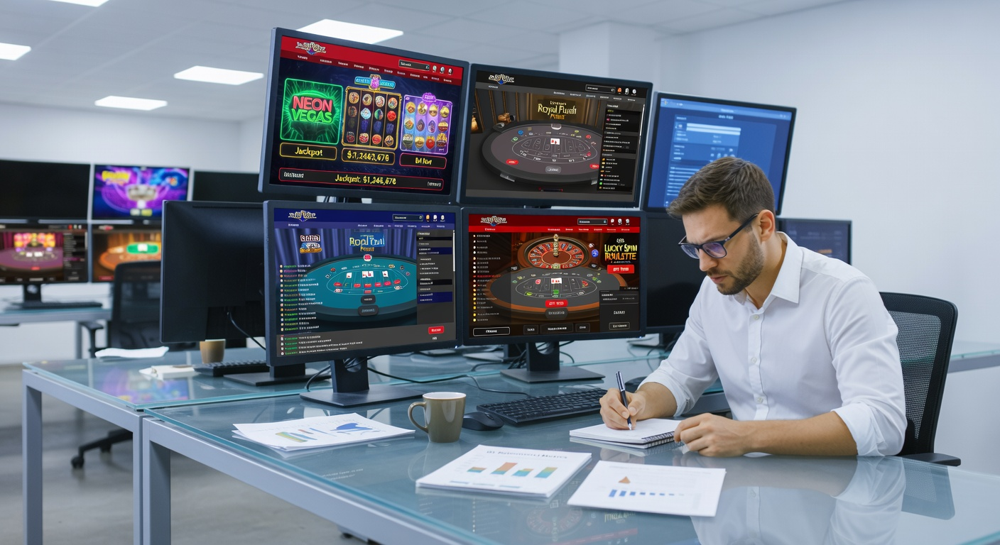
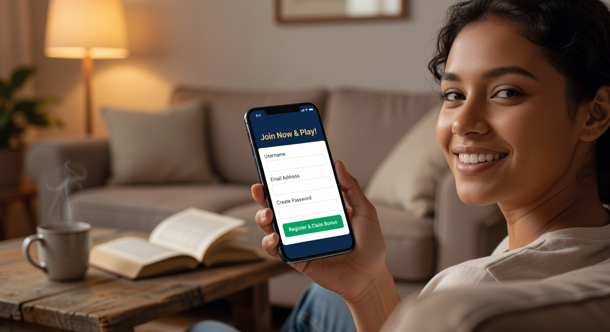
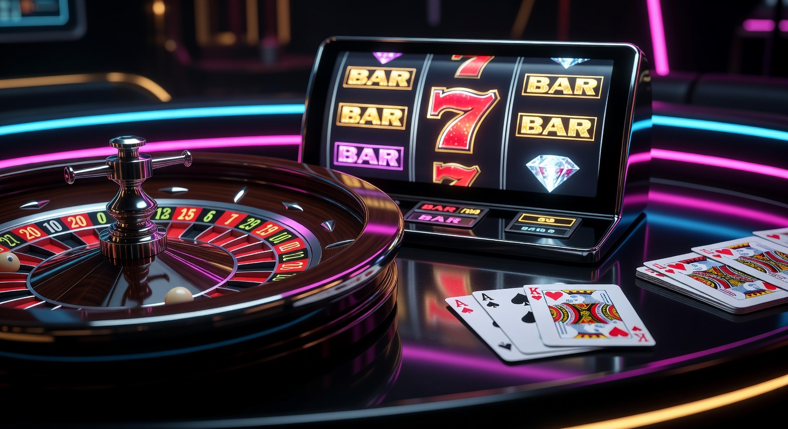
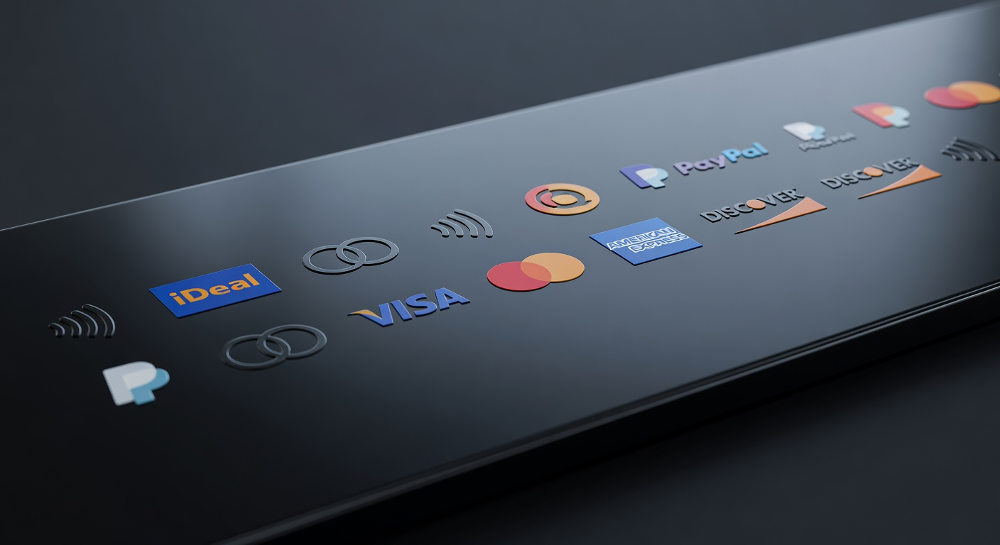

Nieuwe online casino echt geld: De complete gids voor 2026
Welkom in het jaar 2026, een tijd waarin de digitale gokwereld in Nederland een ongekende transformatie heeft ondergaan. Voor spelers die op zoek zijn naar een nieuwe online casino echt geld ervaring, is het landschap nog nooit zo divers en technologisch geavanceerd geweest. De integratie van kunstmatige intelligentie, razendsnelle betaalmethoden en een nog strengere focus op spelersbescherming heeft ervoor gezorgd dat gokken in Nederland veiliger en leuker is dan ooit tevoren.
In dit artikel duiken we diep in de wereld van de nieuwste aanbieders. Of u nu een ervaren high roller bent of een recreatieve speler die voor het eerst een gokje waagt, het vinden van het juiste platform is cruciaal. We bespreken niet alleen waar u op moet letten bij een nieuwe online casino echt geld, maar we analyseren ook de trends die 2026 definiëren, van virtual reality lobby's tot gepersonaliseerde bonusstructuren die zich aanpassen aan uw speelstijl.
De Nederlandse markt is in 2026 volledig volwassen geworden. De concurrentie tussen aanbieders is moordend, wat resulteert in betere voorwaarden voor de consument. Online casino's op Wikipedia bieden een historisch perspectief, maar vandaag de dag kijken we naar de toekomst van iGaming in de polder. Laten we kijken naar wat deze moderne platformen te bieden hebben en hoe u het maximale uit uw speelsessie kunt halen.
Waarom spelen bij een nieuw online casino met echt geld?
De keuze voor een nieuwe online casino echt geld aanbieder is vaak ingegeven door de wens voor innovatie. Gevestigde namen hebben soms de neiging om vast te roesten in oude systemen, terwijl nieuwkomers in 2026 direct gebruikmaken van de modernste technieken. Denk hierbij aan interfaces die volledig geoptimaliseerd zijn voor de nieuwste generatie smartphones en tablets, waarbij haperingen tot het verleden behoren.
Een ander groot voordeel is de creativiteit op het gebied van promoties. Een nieuwe online casino echt geld site moet zichzelf bewijzen en doet dit vaak door middel van zeer competitieve aanbiedingen. Platforms zoals Goldbet laten zien hoe een modern platform spelers kan aantrekken met een gestroomlijnde gebruikerservaring en een uniek spelaanbod dat afwijkt van de standaard lobby's.
Daarnaast zien we dat nieuwe spelers vaak profiteren van snellere verificatieprocessen. Dankzij geavanceerde koppelingen met nationale identificatiesystemen kunt u bij een modern nieuwe online casino echt geld vaak binnen enkele minuten aan de slag, zonder dat u dagenlang hoeft te wachten op de goedkeuring van uw documenten. Dit gebruiksgemak is een van de belangrijkste pijlers van de huidige generatie goksites.
Hoe wij de nieuwste goksites testen

Het beoordelen van een nieuwe online casino echt geld is een proces dat we uiterst serieus nemen. In 2026 volstaat een simpele blik op de homepage niet meer. Ons team van experts duikt onder de motorkap van elk platform om de integriteit en kwaliteit te waarborgen. We kijken hierbij naar de technische infrastructuur, de eerlijkheid van de algoritmes en de transparantie van de bedrijfsvoering.
Tijdens onze tests storten we zelf bedragen om de snelheid van transacties te verifiëren. Een platform als Newlucky scoort bijvoorbeeld hoog op onze lijst vanwege hun efficiënte verwerking van betalingen. We kijken ook naar de stabiliteit van de servers tijdens piekuren, om te garanderen dat uw nieuwe online casino echt geld ervaring niet wordt onderbroken door technische storingen op cruciale momenten.
Tot slot analyseren we de feedback van de gemeenschap. Hoewel een casino nieuw kan zijn, is de reputatie van de achterliggende eigenaar vaak al bekend. We onderzoeken de geschiedenis van de exploitant en controleren of zij in het verleden ethisch hebben gehandeld. Alleen partijen die aan onze strenge 2026-normen voldoen, halen onze uiteindelijke aanbevelingslijst.
Veiligheid en KSA-vergunningen
De rol van de Kansspelautoriteit is in 2026 belangrijker dan ooit. Elk nieuwe online casino echt geld dat zich op de Nederlandse markt begeeft, moet voldoen aan de strengste eisen op het gebied van veiligheid en verslavingspreventie. Het bezit van een geldige licentie is voor ons een absolute voorwaarde om een casino überhaupt te overwegen voor een review.
Naast de Nederlandse licentie kijken we ook naar internationale standaarden. Een licentie van de MGA (Malta Gaming Authority) kan een extra indicatie zijn van een betrouwbare internationale operatie. Veiligheid betekent ook dat uw persoonlijke en financiële gegevens worden beschermd door de nieuwste encryptietechnologieën, zoals quantum-resistente SSL-verbindingen die in 2026 de standaard zijn geworden.
Spelaanbod en software providers
Een nieuwe online casino echt geld is slechts zo goed als de spellen die het aanbiedt. In 2026 verwachten spelers een bibliotheek die duizenden titels beslaat. We kijken specifiek naar de aanwezigheid van marktleiders zoals NetEnt en Pragmatic Play. Deze providers staan garant voor eerlijke speluitkomsten door het gebruik van gecertificeerde Random Number Generators (RNG).
Naast de bekende namen zoeken we ook naar exclusieve samenwerkingen met opkomende studio's. Een modern nieuwe online casino echt geld onderscheidt zich door titels aan te bieden die u nergens anders vindt. Dit kunnen innovatieve "Crash" games zijn of slots met unieke mechanismen die de traditionele rollen vervangen door complexe 3D-werelden.
Stappenplan: Beginnen bij een nieuwe aanbieder

Wanneer u besluit om over te stappen naar een nieuwe online casino echt geld omgeving, is het handig om een vast proces te volgen. Dit zorgt ervoor dat u geen belangrijke details mist en direct veilig kunt gaan spelen. In 2026 is dit proces grotendeels geautomatiseerd, maar uw eigen waakzaamheid blijft essentieel.
- Controleer de licentiegegevens onderaan de website van het casino.
- Maak een account aan en doorloop de iDIN-verificatie voor directe leeftijdsbevestiging.
- Stel uw persoonlijke limieten in (stortingslimiet, tijdslimiet en maximaal saldo).
- Voer uw eerste storting uit met een veilige methode zoals iDEAL.
- Claim indien gewenst de welkomstbonus, maar lees eerst de kleine lettertjes.
Het instellen van limieten is in 2026 een verplicht onderdeel van de registratie bij elk nieuwe online casino echt geld. Dit is een direct gevolg van de regelgeving door de Kansspelautoriteit om spelers tegen zichzelf te beschermen. Neem de tijd om deze limieten realistisch in te stellen op basis van uw persoonlijke budget.
Populaire spellen om te ontdekken

De variëteit aan spellen bij een nieuwe online casino echt geld in 2026 is adembenemend. Waar we vroeger enkel keken naar simpele fruitautomaten, zien we nu een verschuiving naar interactieve ervaringen. Spelers willen meer betrokkenheid en invloed, wat heeft geleid tot de opkomst van hybride spellen die elementen van videogames combineren met gokken.
Platforms zoals Dragobet bieden een uitgebreid scala aan opties, van klassieke tafelspellen tot de nieuwste innovaties op het gebied van sportweddenschappen en e-sports betting. In een nieuwe online casino echt geld vindt u vaak ook toernooien waar u het opneemt tegen andere spelers, wat een extra sociaal element toevoegt aan de ervaring.
De populariteit van "Game Shows" is in 2026 ook naar een nieuw hoogtepunt gestegen. Deze spellen, vaak gepresenteerd door charismatische hosts, bieden een entertainmentwaarde die vergelijkbaar is met televisieprogramma's, maar dan met de kans om met echt geld mooie prijzen te winnen. Het is deze mix van vermaak en spanning die de moderne markt typeert.
Live casino met professionele dealers
Het live casino segment is misschien wel de meest dynamische sector van 2026. Dankzij 4K-streaming en augmented reality-toevoegingen is de ervaring bij een nieuwe online casino echt geld bijna niet meer te onderscheiden van een bezoek aan een fysiek casino. U kunt in real-time communiceren met de dealer en andere spelers aan de tafel.
In een modern live casino vindt u variaties op Roulette en Blackjack die speciaal zijn ontworpen voor de online speler. Denk aan Lightning-versies met vermenigvuldigers die uw inzet tot wel 500 keer kunnen vergroten. Het is de perfecte plek voor diegenen die houden van de sociale interactie en de transparantie van fysieke kaarten en echte roulettewielen.
Innovatieve video slots en gokkasten
Video slots blijven de ruggengraat van elk nieuwe online casino echt geld. In 2026 zien we dat providers als NetEnt de grenzen verleggen met slots die reageren op de voorkeuren van de speler. De graphics zijn van bioscoopkwaliteit en de verhaallijnen zijn dieper dan ooit tevoren, waardoor elke spin aanvoelt als een onderdeel van een groter avontuur.
Ook de "Bonus Buy" feature, mits toegestaan onder de Nederlandse wetgeving van 2026, blijft een populaire optie voor spelers die direct toegang willen tot de spannendste onderdelen van een spel. Bij een nieuwe online casino echt geld zult u merken dat de slots vaak een hoger uitbetalingspercentage (RTP) hebben dan in fysieke hallen, wat uw kansen op een winnende sessie statistisch gezien vergroot.
Bonussen bij een nieuwe online casino voor echt geld
Bonussen zijn in 2026 geëvolueerd van simpele lokkertjes naar complexe loyaliteitssystemen. Een nieuwe online casino echt geld gebruikt bonussen niet alleen om u binnen te halen, maar vooral om u te behouden. We zien steeds vaker gepersonaliseerde aanbiedingen die zijn gebaseerd op uw favoriete spellen. Als u voornamelijk slots speelt, zult u minder snel een bonus voor sportweddenschappen ontvangen.
Een aanbieder als Fortunicabet staat bekend om hun innovatieve benadering van spelersbeloningen. In plaats van een standaardpakket, bieden zij vaak een keuze aan, zodat u de bonus kunt selecteren die het beste bij uw speelstijl past. Dit soort flexibiliteit is wat een nieuwe online casino echt geld in 2026 onderscheidt van de traditionele garde.
Het is echter essentieel om te begrijpen dat een bonus nooit "gratis geld" is. Elk nieuwe online casino echt geld hanteert regels om misbruik te voorkomen. In 2026 zijn deze regels door strengere regelgeving wel een stuk transparanter geworden, waardoor u precies weet waar u aan toe bent voordat u een aanbieding accepteert.
Welkomstbonussen en free spins
De welkomstbonus blijft het uithangbord van elk nieuwe online casino echt geld. Vaak bestaat dit uit een verdubbeling van uw eerste storting, aangevuld met een aantal free spins op een populaire gokkast. In 2026 zien we dat deze spins vaak direct beschikbaar zijn, zonder dat u eerst uw eigen geld hoeft rond te spelen.
Toch is het belangrijk om naar de limieten te kijken. Soms is de maximale winst uit free spins begrensd tot een bepaald bedrag. Een nieuwe online casino echt geld dat eerlijkheid hoog in het vaandel heeft staan, zal deze limieten duidelijk communiceren in de actievoorwaarden, zodat er achteraf geen teleurstellingen ontstaan bij een grote winst.
Belangrijke bonusvoorwaarden
In 2026 zijn de rondspeelvoorwaarden (wagering requirements) bij een nieuwe online casino echt geld over het algemeen gunstiger geworden door toegenomen marktwerking. Waar voorheen 50x rondspelen de norm was, zien we nu vaak voorwaarden tussen de 20x en 30x. Dit maakt het realistischer om een bonus daadwerkelijk om te zetten in opneembaar cash.
Let ook op de "game weighting". Niet elk spel draagt voor de volle 100% bij aan het rondspelen van uw bonus. In een nieuwe online casino echt geld tellen slots meestal volledig mee, maar dragen tafelspellen of het live casino soms slechts voor 5% of 10% bij. Lees dit altijd na in de voorwaarden om te voorkomen dat u onnodig lang moet doorspelen.
Betaalmethoden voor Nederlandse spelers

Betrouwbare betaalmethoden zijn de levensader van elk nieuwe online casino echt geld. In 2026 is de integratie van instant-payment technologieën de standaard. Nederlandse spelers verwachten dat hun geld onmiddellijk op hun spelersaccount staat en, belangrijker nog, dat winsten binnen enkele minuten weer op hun bankrekening staan.
Naast de traditionele methoden zien we in 2026 ook de opkomst van gespecialiseerde e-wallets en open-banking oplossingen die specifiek zijn ontworpen voor de iGaming industrie. Een nieuwe online casino echt geld dat deze opties aanbiedt, toont aan dat het investeert in de nieuwste financiële technologie om de gebruikerservaring te verbeteren.
| Methode | Stortingstijd | Uitbetalingssnelheid | Veiligheidsniveau |
|---|---|---|---|
| iDEAL | Direct | < 5 minuten | Zeer Hoog |
| Creditcard | Direct | 1-2 werkdagen | Hoog |
| E-wallets | Direct | Direct | Hoog |
| Bankoverschrijving | Direct | < 15 minuten | Zeer Hoog |
Geld storten met iDEAL
Ondanks de opkomst van nieuwe technologieën blijft iDEAL de onbetwiste koning van de Nederlandse betaalmarkt in 2026. Een nieuwe online casino echt geld zonder iDEAL is in Nederland simpelweg niet levensvatbaar. De interface is in 2026 nog verder gestroomlijnd, waarbij u vaak enkel met een biometrische scan (gezichtsherkenning of vingerafdruk) op uw telefoon de betaling kunt bevestigen.
Het gebruik van iDEAL bij een nieuwe online casino echt geld biedt ook een extra laag beveiliging, aangezien u betaalt binnen de vertrouwde omgeving van uw eigen bank. De Kansspelautoriteit stimuleert het gebruik van deze methode omdat het ook helpt bij de verificatie van de identiteit van de rekeninghouder, wat witwassen en fraude tegengaat.
Snelle uitbetaling van winsten
Niets is frustrerender dan dagenlang moeten wachten op uw geld. In 2026 is de "instant withdrawal" een standaardfeature geworden bij elk gerenommeerd nieuwe online casino echt geld. Dankzij SEPA Instant Credit Transfer technologieën wordt het geld vaak al bijgeschreven terwijl u het casino nog aan het afsluiten bent.
Platforms zoals Spinorhino hebben hun volledige backend geoptimaliseerd voor deze snelle verwerkingen. Wanneer u bij een nieuwe online casino echt geld speelt, is de snelheid van uitbetalen een van de beste indicatoren voor de financiële gezondheid en betrouwbaarheid van het bedrijf. Een casino dat snel betaalt, heeft duidelijk zijn zaken op orde.
Verantwoord gokken en het Cruks-register
Verantwoord gokken is in 2026 niet langer een optie, maar een fundamenteel onderdeel van de bedrijfsvoering. Elk nieuwe online casino echt geld in Nederland is verplicht aangesloten op het Cruks (Centraal Register Uitsluiting Kansspelen). Dit systeem zorgt ervoor dat spelers die zichzelf een speelverbod hebben opgelegd, bij geen enkele legale aanbieder meer terecht kunnen.
Het is belangrijk om te onthouden dat gokken een vorm van entertainment moet blijven. Als u merkt dat u vaker speelt dan u wilt, of dat u geld gebruikt dat u eigenlijk voor andere zaken nodig heeft, trek dan aan de bel. Een goed nieuwe online casino echt geld biedt tools aan om uw gedrag te monitoren en kan u direct doorverwijzen naar professionele hulpinstanties zoals Loket Kansspel.
In 2026 maken veel casino's ook gebruik van AI-algoritmes die afwijkend speelgedrag herkennen. Als u bijvoorbeeld plotseling uw inzet drastisch verhoogt of op ongebruikelijke tijden gaat spelen, kan het nieuwe online casino echt geld automatisch een preventief gesprek met u inplannen of tijdelijke restricties opleggen. Dit klinkt misschien streng, maar het is essentieel voor een duurzame gokomgeving.
Nieuw Online Casino: Trends en ontwikkelingen
De markt voor een nieuwe online casino blijft zich razendsnel ontwikkelen. In 2026 zien we dat "Gamification" een nieuwe vlucht heeft genomen. U speelt niet alleen een spel, u maakt deel uit van een community. Door te spelen verdient u ervaringspunten, stijgt u in level en ontgrendelt u unieke avatars of speciale functies binnen het platform.
Een andere trend in 2026 is de focus op duurzaamheid en maatschappelijk verantwoord ondernemen. Een nieuwe online casino echt geld profileert zich steeds vaker door een deel van de winst te doneren aan goede doelen of door klimaatneutrale servers te gebruiken. De moderne speler vindt ethiek steeds belangrijker en kiest zijn platform daar ook op uit.
Ook de integratie van virtual reality (VR) begint eindelijk door te breken. Bij een nieuwe online casino echt geld kunt u in 2026 met een VR-bril door een digitale lobby lopen, aan een gokkast gaan zitten en de hendel fysiek naar beneden trekken. Deze immersie tilt de online ervaring naar een niveau dat we ons enkele jaren geleden nog nauwelijks konden voorstellen.
Wat is CRUKS?
CRUKS staat voor Centraal Register Uitsluiting Kansspelen en is een essentieel hulpmiddel voor spelersbescherming in Nederland. Iedereen die zich inschrijft bij een nieuwe online casino echt geld wordt gecontroleerd tegen dit register. Als u in het register staat, krijgt u simpelweg geen toegang tot de spellen. Dit geldt voor zowel online als fysieke casino's in Nederland.
U kunt uzelf vrijwillig inschrijven in CRUKS voor een periode van minimaal zes maanden. In 2026 is het proces om u aan te melden eenvoudiger dan ooit via uw DigiD. Het is een krachtig middel om een pauze in te lassen en te voorkomen dat u in de verleiding komt bij een nieuwe online casino echt geld terwijl u eigenlijk even niet zou moeten gokken. Veiligheid staat altijd voorop.
Nieuwste online casino 2026
Als we kijken naar de "nieuwste online casino 2026" lijst, zien we namen die we een jaar geleden nog niet kenden. Deze platformen zijn vanaf de grond opgebouwd met de mobiele gebruiker als uitgangspunt. Een nieuwe online casino echt geld in 2026 heeft vaak geen aparte app meer nodig, omdat de mobiele browserervaring door middel van Progressive Web Apps (PWA) perfect is.
Deze nieuwste generatie aanbieders onderscheidt zich door een enorme transparantie. U kunt vaak live statistieken zien van welke spellen op dat moment het meest uitbetalen of wat de grootste winsten van de dag zijn. Dit schept een gevoel van vertrouwen en gemeenschap bij een nieuwe online casino echt geld, wat bij oudere sites vaak ontbreekt.
Betaalopties en limieten
De variatie in betaalopties is in 2026 cruciaal. Naast iDEAL zien we dat diensten als Apple Pay en Google Pay volledig zijn geïntegreerd. Bij een nieuwe online casino echt geld kunt u vaak met één klik een storting doen, wat de drempel om te spelen verlaagt. Daarom is het instellen van strikte limieten zo belangrijk.
Een nieuwe online casino echt geld zal u in 2026 proactief waarschuwen als u uw limieten nadert. Dit is geen irritante pop-up, maar een nuttige informatiebron die u helpt om binnen uw budget te blijven. Transparantie over limieten en kosten (of het gebrek daaraan) is een teken van een kwalitatief hoogwaardig platform dat zijn spelers serieus neemt.
Welkomstbonus strategieën
Het slim gebruiken van een welkomstbonus bij een nieuwe online casino echt geld kan uw speeltijd aanzienlijk verlengen. In 2026 is de beste strategie niet altijd om voor de hoogste bonus te gaan, maar voor de bonus met de beste voorwaarden. Een 100% bonus tot €100 met 20x rondspelen is vaak veel waardevoller dan een 200% bonus tot €500 met 50x rondspelen.
Bovendien loont het om te kijken naar "non-sticky" bonussen. Hierbij speelt u eerst met uw eigen geld en pas daarna met het bonusgeld. Als u een grote winst pakt terwijl u nog met uw eigen geld speelt, kunt u de bonus bij een nieuwe online casino echt geld annuleren en uw winst direct laten uitbetalen. Dit biedt een enorme flexibiliteit en is een favoriete strategie onder ervaren spelers in 2026.
Wat is je leeftijd? Toegankelijkheid in NL
De minimumleeftijd om te spelen bij een nieuwe online casino echt geld is in Nederland strikt 18 jaar. Echter, voor veel bonussen en marketinguitingen geldt in 2026 een leeftijdsgrens van 24 jaar. Dit is een maatregel van de overheid om jongvolwassenen, een groep die statistisch gezien kwetsbaarder is voor gokverslaving, extra te beschermen.
Bij de registratie zal een nieuwe online casino echt geld altijd om een legitimatiebewijs vragen. In 2026 gebeurt dit meestal via een automatische scan die uw leeftijd en identiteit binnen enkele seconden verifieert. Het is onmogelijk om deze systemen te omzeilen, wat de integriteit van de Nederlandse gokmarkt waarborgt en minderjarigen buiten de deur houdt.
Spelaanbod: Wat mag je verwachten?
In 2026 mag u verwachten dat een nieuwe online casino echt geld meer biedt dan alleen maar slots. De integratie van "Skill-based games" is een grote trend. Hierbij heeft uw behendigheid of kennis een kleine invloed op de uitkomst van het spel. Dit spreekt vooral een jongere generatie aan die gewend is aan gamen op consoles en pc's.
Daarnaast is de kwaliteit van de RNG (Random Number Generator) spellen bij een nieuwe online casino echt geld van een ongekend niveau. Providers als Pragmatic Play leveren spellen met complexe wiskundige modellen die zorgen voor een eerlijke en spannende spelervaring. Of u nu houdt van lage volatiliteit (veel kleine prijzen) of hoge volatiliteit (kans op gigantische jackpots), het aanbod in 2026 dekt alle voorkeuren.
Nieuwe Online Casino Buitenland vs. NL
Hoewel er veel verleidingen zijn om te spelen bij een nieuwe online casino echt geld dat buiten de Nederlandse jurisdictie valt, kleven hier grote risico's aan. Een casino met enkel een licentie uit bijvoorbeeld Curaçao biedt niet dezelfde mate van spelersbescherming als een door de Kansspelautoriteit vergunde aanbieder. In geval van een conflict heeft u bij een buitenlandse partij vaak geen poot om op te staan.
Bovendien zijn winsten bij een nieuwe online casino echt geld buiten de EU vaak onderhevig aan kansspelbelasting die u zelf moet aangeven. Bij een legale Nederlandse aanbieder is dit in 2026 allemaal automatisch geregeld. De veiligheid van uw geld en de zekerheid van een eerlijk spel wegen altijd zwaarder dan een net iets hogere bonus bij een schimmige buitenlandse website.
Nieuw Live Casino innovaties
In 2026 zien we dat het live casino niet langer beperkt is tot een studio in Malta of Letland. Sommige nieuwe online casino echt geld aanbieders streamen nu direct vanuit fysieke casino's in Nederland. Dit verhoogt de betrouwbaarheid en zorgt voor een unieke lokale sfeer waarbij u in het Nederlands kunt communiceren met de dealer.
Ook de introductie van "Multi-game" views, waarbij u op meerdere tafels tegelijk kunt spelen in één venster, is een standaard geworden. Een modern nieuwe online casino echt geld begrijpt dat spelers variatie willen. De technologische sprong voorwaarts in 2026 heeft ervoor gezorgd dat deze streams vloeiend werken, zelfs op een mobiele verbinding, zonder enige vertraging.
GetLucky en andere rijzende sterren
De markt van 2026 heeft een aantal opvallende namen voortgebracht. Hoewel we altijd kritisch blijven, zien we dat nieuwe concepten vaak de markt opschudden. Een nieuwe online casino echt geld probeert zich vaak te profileren met een specifiek thema of een unieke feature die de gevestigde orde dwingt om ook te innoveren.
Het is interessant om te zien hoe deze rijzende sterren gebruikmaken van sociale media en influencers om hun merk te bouwen. In 2026 is de marketing voor een nieuwe online casino echt geld subtieler en meer gericht op entertainment dan op het simpelweg pushen van bonussen. Dit draagt bij aan een positiever imago van de sector als geheel.
Klantenservice kwaliteitseisen
Een vaak onderschat aspect van een nieuwe online casino echt geld is de klantenservice. In 2026 verwachten we een 24/7 bereikbaarheid via live chat, telefoon en e-mail. Een casino dat u urenlang laat wachten op een antwoord, is simpelweg niet meer van deze tijd. De snelheid en deskundigheid van de supportmedewerkers zijn een directe afspiegeling van de professionaliteit van het casino.
Veel nieuwe online casino echt geld aanbieders maken in 2026 gebruik van geavanceerde AI-chatbots voor simpele vragen, maar zorgen ervoor dat u met één klik kunt overschakelen naar een menselijke medewerker voor complexere zaken. In Nederland is het bovendien een vereiste dat de klantenservice in de Nederlandse taal beschikbaar is, wat de drempel voor veel spelers aanzienlijk verlaagt.
Reloadbonus en loyaliteit
Na de welkomstbonus komt de fase van de reloadbonus. Een nieuwe online casino echt geld wil dat u blijft terugkomen en biedt daarom regelmatig extraatjes aan op volgende stortingen. In 2026 zijn deze bonussen vaak gekoppeld aan specifieke dagen van de week of evenementen, zoals een grote sportwedstrijd of de lancering van een nieuwe gokkast.
Loyaliteitsprogramma's zijn in 2026 veel transparanter geworden. U kunt bij een nieuwe online casino echt geld vaak precies zien hoeveel punten u nog nodig heeft voor het volgende niveau. De beloningen variëren van cashback op verliezen tot exclusieve uitnodigingen voor evenementen. Dit zorgt ervoor dat trouwe spelers zich gewaardeerd voelen en niet telkens hoeven over te stappen naar een ander casino voor een goede deal.
Wat is het beste online casino?
De vraag "Wat is het beste online casino?" is in 2026 lastiger te beantwoorden dan ooit, simpelweg omdat de kwaliteit over de hele linie enorm is gestegen. Het "beste" casino is subjectief en hangt af van uw persoonlijke voorkeuren. Zoekt u de grootste selectie aan slots, of gaat u voor de meest authentieke live casino ervaring?
Voor velen is een nieuwe online casino echt geld de beste keuze vanwege de moderne interface en snelle betalingen. Anderen geven de voorkeur aan de bewezen reputatie van een gevestigde naam. Belangrijk is dat u kiest voor een platform dat past bij uw speelstijl en budget, en dat u zich er prettig en veilig voelt. Onze reviews in 2026 helpen u om die keuze weloverwogen te maken.
Tonybet en Hard Rock Casino: Marktoverzicht
In het huidige marktoverzicht van 2026 zien we dat internationale grootmachten zoals Tonybet en Hard Rock Casino hun plek in Nederland stevig hebben verankerd. Zij brengen een schat aan ervaring en een enorm budget mee voor innovatie. Een nieuwe online casino echt geld moet van goede huize komen om met deze giganten te concurreren op het gebied van spelaanbod en techniek.
Tegelijkertijd zien we dat juist deze grotere partijen soms minder flexibel zijn dan de kleinere, wendbare nieuwkomers. De dynamiek tussen de gevestigde reuzen en het ambitieuze nieuwe online casino echt geld zorgt voor een gezonde markt waarin de speler uiteindelijk de lachende derde is. De constante drang naar verbetering zorgt voor steeds betere producten en diensten.
VIP-programma’s en high rollers
Voor spelers die met grotere bedragen spelen, de zogenaamde high rollers, biedt een nieuwe online casino echt geld in 2026 vaak gespecialiseerde VIP-programma's. Deze programma's bieden hogere limieten voor stortingen en uitbetalingen, een persoonlijke accountmanager en op maat gemaakte bonussen. In 2026 is er echter een strikt toezicht op deze programma's om te voorkomen dat spelers worden aangemoedigd om boven hun macht te spelen.
Een VIP-behandeling bij een nieuwe online casino echt geld betekent in 2026 ook dat het casino een extra zorgplicht heeft. Er worden regelmatig controles uitgevoerd op de herkomst van de middelen (Source of Funds) om te garanderen dat het spelplezier niet omslaat in financiële problemen. Deze balans tussen luxe service en verantwoordelijkheid is de hoeksteen van modern VIP-management.
Conclusie: Is een overstap de moeite waard?
In 2026 kunnen we concluderen dat het uitproberen van een nieuwe online casino echt geld zeker de moeite waard kan zijn. De technologische voordelen, de snellere uitbetalingen en de frisse benadering van bonussen bieden een duidelijke meerwaarde ten opzichte van de oudere platforms. De Nederlandse markt is in 2026 veiliger dan ooit, mits u kiest voor aanbieders met een licentie van de Kansspelautoriteit.
Of u nu kiest voor de innovatie van een nieuwkomer of de stabiliteit van een gevestigde naam, de belangrijkste factor blijft uw eigen speelplezier en veiligheid. Gebruik de tools die u in 2026 ter beschikking staan, zoals Cruks en persoonlijke limieten, om uw ervaring positief te houden. Het nieuwe online casino echt geld landschap biedt voor ieder wat wils, van ontspannende slots tot de intense spanning van het live casino.
Samenvattend: wees kritisch, vergelijk de voorwaarden en geniet van de ongelooflijke innovaties die de gokwereld in 2026 te bieden heeft. De toekomst van online entertainment is hier, en het is spannender dan we ooit hadden durven dromen. Meer diepgaande informatie over gokken en kansspelen is te vinden op Forbes voor economische analyses van de gokmarkt.
Veelgestelde vragen over nieuwe echt geld casino's
Is een nieuwe online casino echt geld veilig in 2026?
Ja, mits het casino beschikt over een vergunning van de Nederlandse Kansspelautoriteit. Deze vergunning garandeert dat het casino voldoet aan strenge eisen op het gebied van eerlijkheid, veiligheid en spelersbescherming.
Hoe lang duurt een uitbetaling gemiddeld?
Bij de meeste moderne casino's in 2026 staat uw geld binnen 5 tot 15 minuten op uw rekening, dankzij instant-payment technologieën en directe koppelingen met Nederlandse banken.
Kan ik bij elk nieuw casino met iDEAL betalen?
In Nederland is iDEAL de standaard. Bijna elk nieuwe online casino echt geld dat zich op de Nederlandse markt richt, biedt iDEAL aan als primaire betaalmethode voor stortingen.
Zijn de winsten bij een nieuw casino belastingvrij?
Bij casino's met een Nederlandse licentie wordt de kansspelbelasting in 2026 door het casino zelf afgedragen. Het bedrag dat u op uw rekening ontvangt, is dus netto en u hoeft hierover geen verdere belasting te betalen.
Wat moet ik doen als ik gokproblemen ervaar?
Neem direct contact op met de klantenservice van het casino om uw account te pauzeren of te sluiten. Daarnaast kunt u zich inschrijven in het Cruks-register voor een volledige uitsluiting bij alle legale aanbieders en contact opnemen met instanties zoals Loket Kansspel.

Expert in online casino's en digitaal gokken met meer dan 8 jaar ervaring in de sector.